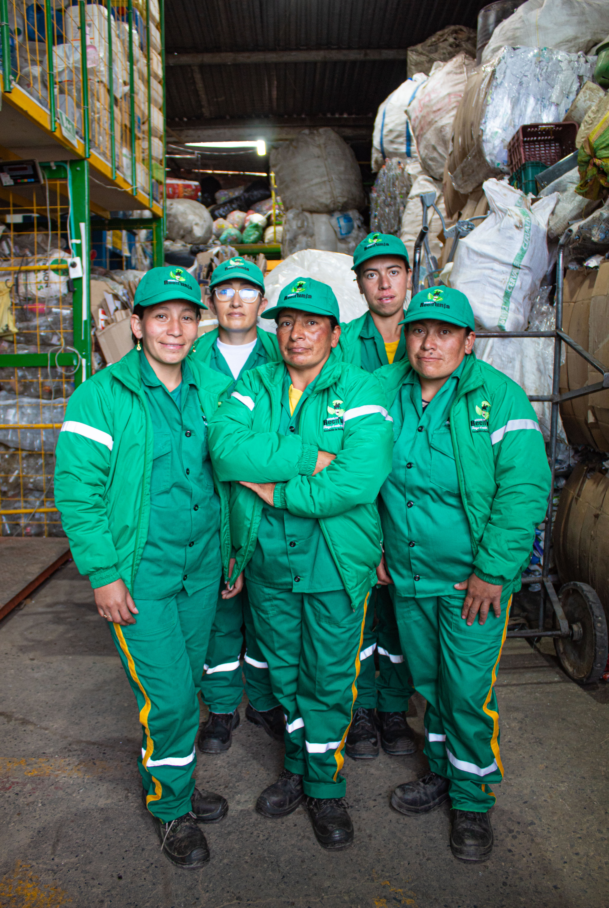
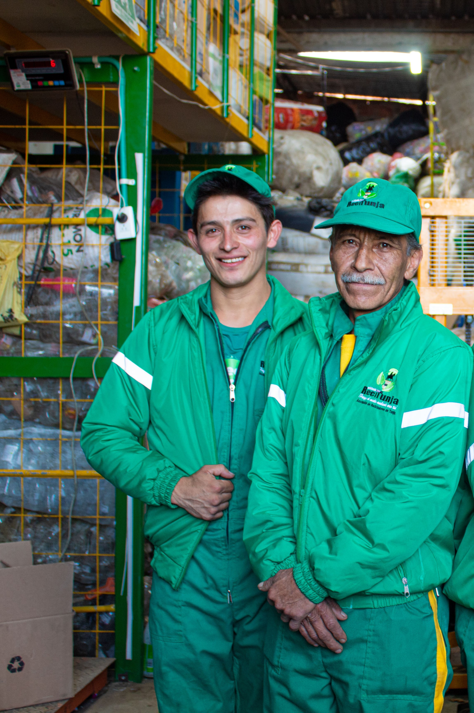
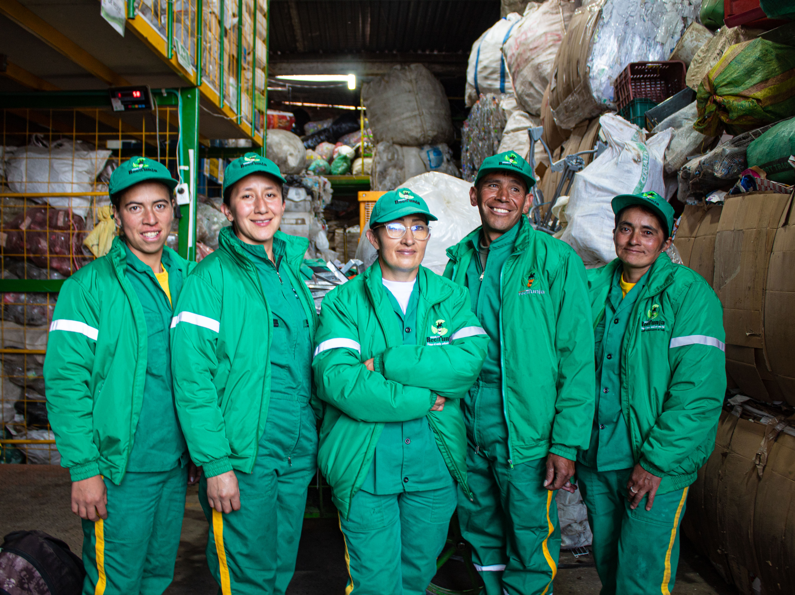
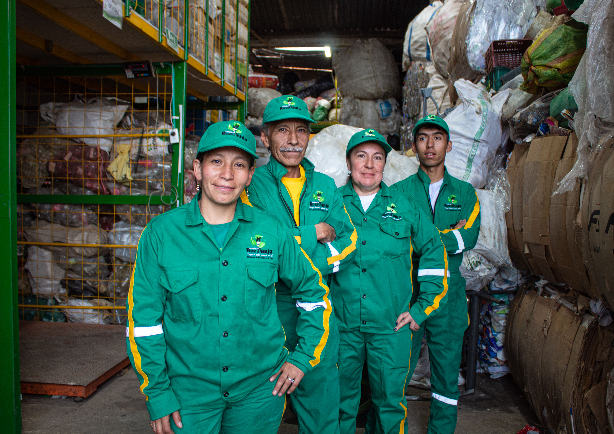

Porque el medio ambiente eres tú
Transformamos los residuos de Tunja en nuevas oportunidades. Descubre cómo tu compromiso con el reciclaje construye un futuro más limpio y sostenible para todos. Únete a la economía circular.

Mejorar la calidad de vida de los recicladores de oficio mediante la gestión integral de los residuos sólidos, trabajando en equipo para dignificar esta labor.
Ser reconocidos como la organización líder en aprovechamiento de residuos sólidos en Boyacá, contribuyendo al desarrollo sostenible y la economía circular.
Constituida el 7 de agosto de 2009 por 19 recicladores de oficio, 80% mujeres cabeza de familia. Operamos rutas selectivas, reciclaje empresarial e institucional en Tunja.
Recolectamos, clasificamos y aprovechamos materiales reciclables para reducir el impacto ambiental de Tunja.
Visitamos tu barrio en días y horarios fijos para recoger los materiales reciclables que depositas en la bolsa azul.

Gestionamos los residuos aprovechables de empresas e instituciones con procesos certificados y responsables.

Capacitamos a comunidades, colegios y empresas sobre la correcta separación y aprovechamiento de residuos.

Cada kilogramo reciclado es un paso hacia una ciudad más limpia, justa y sostenible.

Sigue estos consejos para que los materiales que entregas a los Verdecitos de ReciTunja lleguen en las mejores condiciones y puedan ser aprovechados.
Enjuaga antes de entregar. Lava las bolsas plásticas de carnes y frascos antes de entregárselos a los Verdecitos; una pequeña limpieza marca la diferencia.
Cubetas de huevo limpias. Deben estar sin rotos ni aplastadas para poder reutilizarse correctamente.
Tetra Pack sí es reciclable. Las cajas de leche y jugos son bienvenidas; enjuágalas y entrégalas secas.
Separa en casa. Cartón, plástico, vidrio, metal y papel van en bolsa aparte de la basura ordinaria.
Un reciclable sucio contamina todos. Limpiar antes de separar es clave para no perder el valor del material.
Reutiliza el agua. El agua usada para enjuagar reciclables puede reutilizarse para el piso o el jardín.
Aplana las cajas. Aplana las cajas de cartón para que ocupen menos espacio y sea más fácil su recolección.
Usa la bolsa azul. Deposita todos tus materiales reciclables secos y limpios en la bolsa azul, en el día y horario de la ruta selectiva de tu barrio.
Para que el proceso funcione, es importante saber qué acepta nuestro equipo. Recuerda: deben estar limpios y secos.